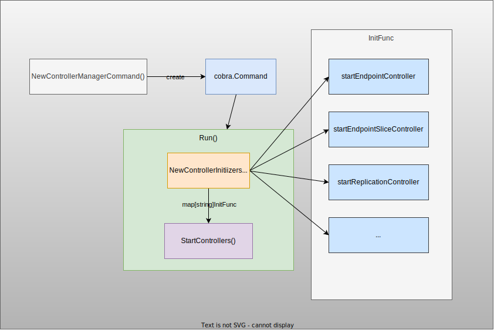
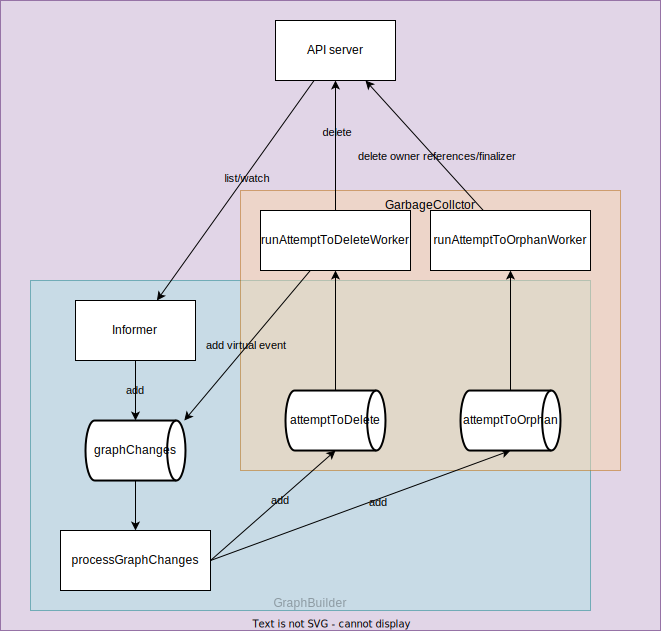

kube-controller-manager
1. Kube Controller Manager

kube-controller-manager runs built-in controllers.
Entrypoint:
- controller-manager.go starts kube-controller-manager with only three lines.
func main() { command := app.NewControllerManagerCommand() code := cli.Run(command) os.Exit(code) } - NewControllerManagerCommand returns a cobra.Command
- NewControllerInitializers defines a set of controllers to start in the controller manager. Specifically, the following controllers are registered with the
startXXXControllerwith typeInitFunctype InitFunc func(ctx context.Context, controllerCtx ControllerContext) (controller controller.Interface, enabled bool, err error)register("endpoint", startEndpointController) register("endpointslice", startEndpointSliceController) register("endpointslicemirroring", startEndpointSliceMirroringController) register("replicationcontroller", startReplicationController) register("podgc", startPodGCController) register("resourcequota", startResourceQuotaController) register("namespace", startNamespaceController) register("serviceaccount", startServiceAccountController) register("garbagecollector", startGarbageCollectorController) register("daemonset", startDaemonSetController) register("job", startJobController) register("deployment", startDeploymentController) register("replicaset", startReplicaSetController) register("horizontalpodautoscaling", startHPAController) register("disruption", startDisruptionController) register("statefulset", startStatefulSetController) register("cronjob", startCronJobController) register("csrsigning", startCSRSigningController) register("csrapproving", startCSRApprovingController) register("csrcleaner", startCSRCleanerController) register("ttl", startTTLController) register("bootstrapsigner", startBootstrapSignerController) register("tokencleaner", startTokenCleanerController) register("nodeipam", startNodeIpamController) register("nodelifecycle", startNodeLifecycleController) - The core function Run calls StartControllers to start the controllers specified by
controllers(map[string]InitFunc{}defined in the previous step)
Each Controller:
InitFuncof each controller is defined in kube-controller-manager/app/core.go. e.g. startGarbageCollectorControllergarbageCollector, err := garbagecollector.NewGarbageCollector( gcClientset, metadataClient, controllerContext.RESTMapper, ignoredResources, controllerContext.ObjectOrMetadataInformerFactory, controllerContext.InformersStarted, )- Each controller is defined under pkg/controller. e.g. pkg/controller/garbagecollector/garbagecollector.go
type GarbageCollector struct { restMapper meta.ResettableRESTMapper metadataClient metadata.Interface // garbage collector attempts to delete the items in attemptToDelete queue when the time is ripe. attemptToDelete workqueue.RateLimitingInterface // garbage collector attempts to orphan the dependents of the items in the attemptToOrphan queue, then deletes the items. attemptToOrphan workqueue.RateLimitingInterface dependencyGraphBuilder *GraphBuilder // GC caches the owners that do not exist according to the API server. absentOwnerCache *ReferenceCache kubeClient clientset.Interface eventBroadcaster record.EventBroadcaster workerLock sync.RWMutex }
2. Controller Overview

Components:
- Reflector:
- Delta FIFO queue:
-
Informer: Monitor Object's event and EventHandler is called for each event (usually add item to WorkQueue in event handlers in a controller).
- sharedIndexInformer: Usually created for a specific resource (e.g.
deploymentInformer) withNewSharedIndexInformer, which creates a new instance for the listwatcher.- Indexer: indexed local cache. Indexer extends Store with multiple indices and restricts each accumulator to simply hold the current object.
Controllerthat pulls objects/notifications using the ListerWatcher and pushes them into aDeltaFIFO.sharedProcessorresponsible for relaying those notifications to each of the informer's clients. <-EventHandleris set toprocessorListener, which is stored inlistenersof asharedProcessor.-
listerWatcherfor the target resource. e.g. for deploymentInformer&cache.ListWatch{ ListFunc: func(options metav1.ListOptions) (runtime.Object, error) { if tweakListOptions != nil { tweakListOptions(&options) } return client.AppsV1().Deployments(namespace).List(context.TODO(), options) }, WatchFunc: func(options metav1.ListOptions) (watch.Interface, error) { if tweakListOptions != nil { tweakListOptions(&options) } return client.AppsV1().Deployments(namespace).Watch(context.TODO(), options) }, },
- sharedIndexInformer: Usually created for a specific resource (e.g.
-
Lister: Retrieve object from in-memory-cache.
- WorkQueue: Store item for which Reconcile loop is executed.
- Scheme: Scheme defines methods for serializing and deserializing API objects, a type registry for converting group, version, and kind information to and from Go schemas, and mappings between Go schemas of different versions. (ref: scheme.go)
- processNextWorkItem: Process an item in WorkQueue.
- syncHandler: Reconcile loop called by
processNextWorkItemfunction (Function name can be different).
3. Built-in Controllers
3.1. EndpointsController

[Kubernetes] EndpointsがよくわかってないのでEndpointsControllerを読んでみた
3.2. GarbageCollector


3.2.1. Components
3.2.1.1. GarbageCollector:
type GarbageCollector struct {
restMapper meta.ResettableRESTMapper
metadataClient metadata.Interface
// garbage collector attempts to delete the items in attemptToDelete queue when the time is ripe.
attemptToDelete workqueue.RateLimitingInterface
// garbage collector attempts to orphan the dependents of the items in the attemptToOrphan queue, then deletes the items.
attemptToOrphan workqueue.RateLimitingInterface
dependencyGraphBuilder *GraphBuilder
// GC caches the owners that do not exist according to the API server.
absentOwnerCache *ReferenceCache
kubeClient clientset.Interface
eventBroadcaster record.EventBroadcaster
workerLock sync.RWMutex
}
- RestMapper: map resources to kind, and map kind and version to interfaces
3.2.1.2. GraphBuilder
builds a graph caching the dependencies among objects.
type GraphBuilder struct {
restMapper meta.RESTMapper
// each monitor list/watches a resource, the results are funneled to the
// dependencyGraphBuilder
monitors monitors
monitorLock sync.RWMutex
// informersStarted is closed after after all of the controllers have been initialized and are running.
// After that it is safe to start them here, before that it is not.
informersStarted <-chan struct{}
// stopCh drives shutdown. When a receive from it unblocks, monitors will shut down.
// This channel is also protected by monitorLock.
stopCh <-chan struct{}
// running tracks whether Run() has been called.
// it is protected by monitorLock.
running bool
eventRecorder record.EventRecorder
metadataClient metadata.Interface
// monitors are the producer of the graphChanges queue, graphBuilder alters
// the in-memory graph according to the changes.
graphChanges workqueue.RateLimitingInterface
// uidToNode doesn't require a lock to protect, because only the
// single-threaded GraphBuilder.processGraphChanges() reads/writes it.
uidToNode *concurrentUIDToNode
// GraphBuilder is the producer of attemptToDelete and attemptToOrphan, GC is the consumer.
attemptToDelete workqueue.RateLimitingInterface
attemptToOrphan workqueue.RateLimitingInterface
// GraphBuilder and GC share the absentOwnerCache. Objects that are known to
// be non-existent are added to the cached.
absentOwnerCache *ReferenceCache
sharedInformers informerfactory.InformerFactory
ignoredResources map[schema.GroupResource]struct{}
}
- monitors: a set of monitors, each of which runs a cache.Controller (1. construct and run a Reflector and pumps objects/notifications to the Config.Queue. 2. pop from the queue and process with Config.ProcessFunc).
- graphChanges: workqueue to store events from informer (input of all process)
- absentOwnerCache: Objects that are known to be non-existent are added to the cached.
- uidToNode (graph): a pointer of concurrentUIDToNode
type concurrentUIDToNode struct { uidToNodeLock sync.RWMutex uidToNode map[types.UID]*node } - node
type node struct { identity objectReference // dependents will be read by the orphan() routine, we need to protect it with a lock. dependentsLock sync.RWMutex // dependents are the nodes that have node.identity as a // metadata.ownerReference. dependents map[*node]struct{} // this is set by processGraphChanges() if the object has non-nil DeletionTimestamp // and has the FinalizerDeleteDependents. deletingDependents bool deletingDependentsLock sync.RWMutex // this records if the object's deletionTimestamp is non-nil. beingDeleted bool beingDeletedLock sync.RWMutex // this records if the object was constructed virtually and never observed via informer event virtual bool virtualLock sync.RWMutex // when processing an Update event, we need to compare the updated // ownerReferences with the owners recorded in the graph. owners []metav1.OwnerReference }isObserved:!virtualvitual: In attemptToDeleteItem, if there's no corresponding object in API server or the latest uid is not same as item.identity.UID, the item is added back to graphChanges with virtual = true
3.2.2. Steps
- GarbageCollector and GraphBuilder are initialized
- Start gc.dependencyGraphBuilder.Run() (wait until cache is synced)
go gc.dependencyGraphBuilder.Run(ctx.Done())- Start
gb.startMonitors(): ensure the current set of monitors are running. Start each of the monitorsgb.sharedInformers.Start(gb.stopCh) go monitor.Run() - Run
runProcessGraphChangesevery secondwait.Until(gb.runProcessGraphChanges, 1*time.Second, stopCh) - runProcessGraphChanges calls processGraphChanges in a for loop.
func (gb *GraphBuilder) runProcessGraphChanges() { for gb.processGraphChanges() { } } processGraphChanges: Get an item fromgraphChangesand put the corresponding node toattemptToDeleteorattemptToOrphanqueue.- if the node in
uidToNodeis not observed and now observed -> node.markObserved()(Add a potentially invalid dependent toattemptToDeletequeue) ref - [
addEventorupdateEvent] if not found inuidToNode,insertNode+processTransitionsref - [
addEventorupdateEvent] if found inuidToNode, reflect changes in ownerReferences and if being deleted,markBeingDeleted()+processTransitionsref - [
deleteEvent] if found- if
event.virtual(event from GarbageCollector) -> in some case setremoveExistingNodeto false as it's not certain. Detail: ref - if
removeExistingNode,removeNode, add dependents toattemptToDelete, and add owners toattemptToDelete
- if
- if the node in
- Start
- Start gc workers
// gc workers for i := 0; i < workers; i++ { go wait.UntilWithContext(ctx, gc.runAttemptToDeleteWorker, 1*time.Second) go wait.Until(gc.runAttemptToOrphanWorker, 1*time.Second, ctx.Done()) }- run runAttemptToDeleteWorker()
processAttemptToDeleteWorker:
func (gc *GarbageCollector) runAttemptToDeleteWorker(ctx context.Context) { for gc.processAttemptToDeleteWorker(ctx) { } }- Get an item (node) from attemptToDelete queue.
action := gc.attemptToDeleteWorker(ctx, item) - Process it in attemptToDeleteWorker
- In case the node, converted from the item in the queue, is not observed (meaning that it's added from
objectReferencewhose object is not found in API server), forget the item if it doesn't exist in the graph or it's observed. ref
- In case the node, converted from the item in the queue, is not observed (meaning that it's added from
- Delete the item with attemptToDeleteItem
err := gc.attemptToDeleteItem(ctx, n)item.isBeingDeleted&!item.isDeletingDependents-> Do nothing and returnnil- Get the latest object from API server
latest, err := gc.getObject(item.identity) - err=NotFound ->
enqueueVirtualDeleteEvent(enqueue event tographChangeswithvirtual=true)gc.dependencyGraphBuilder.enqueueVirtualDeleteEvent(item.identity) latest.GetUID() != item.identity.UID->enqueueVirtualDeleteEvent(enqueue event tographChangeswithvirtual=true) and returnenqueuedVirtualDeleteEventErrgc.dependencyGraphBuilder.enqueueVirtualDeleteEvent(item.identity)item.isDeletingDependents()->gc.processDeletingDependentsItem(item)and returnenqueuedVirtualDeleteEventErr- If no
blockingDependents->gc.removeFinalizer(item, metav1.FinalizerDeleteDependents) - For
blockingDependents, if notisBeingDeleted->gc.attemptToDelete.Add(dep)
- If no
- If there's no
OwnerReferences-> nil - Classify ownerReferences
solid, dangling, waitingForDependentsDeletion, err := gc.classifyReferences(ctx, item, ownerReferences) len(solid) != 0len(dangling) == 0 && len(waitingForDependentsDeletion) == 0-> returnnil- Delete owner references for
danglingandwaitingForDependentsDeletion(send PATCH request to API server)
len(waitingForDependentsDeletion) != 0 && item.dependentsLength() != 0for all dependents, ifisBeingDeleted-> sendunblockOwnerReferencesStrategicMergePatchPATCH request to API server- delete with for
DeletePropagationForeground(API server)
- delete with for
- default
hasOrphanFinalizer-> delete withDeletePropagationOrphanhasDeleteDependentsFinalizer-> delete withDeletePropagationForeground- default -> delete with
DeletePropagationBackground
- Get an item (node) from attemptToDelete queue.
- run runAttemptToOrphanWorker() every second
- Get owner from attemptToOrphan
attemptToOrphanWorkerorphanDependents(owner, dependents): remove owner references via PATCH (API server)gc.removeFinalizer(owner, metav1.FinalizerOrphanDependents)
- run runAttemptToDeleteWorker()
GarbageCollector.Sync keeps updating the resources to monitor periodically. -> GraphBuilder.syncMonitors(resources) but not found where it's called.
TestCase:
- TestCascadingDeletion:
- Pod with ownerreference to
toBeDeletedRCreplicationcontroller -> deleted - Pod with ownerrefrerece to
remainingRCandtoBeDeletedRCreplicatioincontroller -> remain - Pod without ownerreference -> remain
- Delete
toBeDeletedRCNamereplicationcontroller
- Pod with ownerreference to
-
- If deleted with
DeleteOptions.propagationPolicy=Orphan, the ownerreferences are just removed without deleting the object itself.
kubectl create deploy nginx --image=nginx --replicas=1 deployment.apps/nginx created kubectl get deploy NAME READY UP-TO-DATE AVAILABLE AGE nginx 1/1 1 1 3m25s kubectl delete deployment nginx --cascade=orphan deployment.apps "nginx" deleted kubectl get deploy No resources found in default namespace. kubectl get rs NAME DESIRED CURRENT READY AGE nginx-76d6c9b8c 1 1 1 3m40s kubectl get pod NAME READY STATUS RESTARTS AGE nginx-76d6c9b8c-jcwxv 1/1 Running 0 3m46s - If deleted with
3.2.3. Ref
- gabagecollector.go
- graph_builder.go
- test/integration/gabagecollector/garbage_collector_test.go
- Enable garbage collection of custom resources
3.2.4. Memo
- Delete
propagationPolicy=Forground-> API-server updatesmetadata.deletionTimestampand addsforegroundDeletionfinalizer instead of removing the object itself.- curl: with
'{"kind":"DeleteOptions","apiVersion":"v1","propagationPolicy":"Foreground"}' - kubectl:
kubectl delete --cascade=foregraound
- curl: with
PropagationPolicy=Backgound(default) -> API-server immediately deletes the object and its dependents.- curl: with
'{"kind":"DeleteOptions","apiVersion":"v1","propagationPolicy":"Background"}' kubectl delete --cascade=background(orkubectl delete)
- curl: with
PropagationPolicy=Orphan-> API-server deletes the object but not deletes the dependent objects. Instead its dependent objects remain as orphans- curl: with
'{"kind":"DeleteOptions","apiVersion":"v1","propagationPolicy":"Orphan"}' kubectl delete --cascade=orphan
- curl: with
- OwnerReferences
- Finalizers
3.3. NamespaceController
// NamespaceController is responsible for performing actions dependent upon a namespace phase
type NamespaceController struct {
// lister that can list namespaces from a shared cache
lister corelisters.NamespaceLister
// returns true when the namespace cache is ready
listerSynced cache.InformerSynced
// namespaces that have been queued up for processing by workers
queue workqueue.RateLimitingInterface
// helper to delete all resources in the namespace when the namespace is deleted.
namespacedResourcesDeleter deletion.NamespacedResourcesDeleterInterface
}
- API: https://github.com/kubernetes/api/blob/master/core/v1/types.go#L5601
-
FinalizerKubernetes
namespaceController := namespacecontroller.NewNamespaceController( ctx, namespaceKubeClient, metadataClient, discoverResourcesFn, controllerContext.InformerFactory.Core().V1().Namespaces(), controllerContext.ComponentConfig.NamespaceController.NamespaceSyncPeriod.Duration, v1.FinalizerKubernetes, ) go namespaceController.Run(ctx, int(controllerContext.ComponentConfig.NamespaceController.ConcurrentNamespaceSyncs))const ( FinalizerKubernetes FinalizerName = "kubernetes" ) -
- Init NamespaceController
namespaceController := &NamespaceController{ queue: workqueue.NewNamedRateLimitingQueue(nsControllerRateLimiter(), "namespace"), namespacedResourcesDeleter: deletion.NewNamespacedResourcesDeleter(kubeClient.CoreV1().Namespaces(), metadataClient, kubeClient.CoreV1(), discoverResourcesFn, finalizerToken), } - Prepare event handler for namespaceInformer
namespaceInformer.Informer().AddEventHandlerWithResyncPeriod( cache.ResourceEventHandlerFuncs{ AddFunc: func(obj interface{}) { namespace := obj.(*v1.Namespace) namespaceController.enqueueNamespace(namespace) }, UpdateFunc: func(oldObj, newObj interface{}) { namespace := newObj.(*v1.Namespace) namespaceController.enqueueNamespace(namespace) }, }, resyncPeriod, )
- Init NamespaceController
- Run -> worker -> workFunc
- workFunc:
- get key from queue
key, quit := nm.queue.Get() - sync
err := nm.syncNamespaceFromKey(key.(string)) - syncNamespaceFromKey:
- get namespace
namespace, err := nm.lister.Get(key) - run deleter
nm.namespacedResourcesDeleter.Delete(namespace.Name)- Get namespace
namespace, err := d.nsClient.Get(context.TODO(), nsName, metav1.GetOptions{}) namespace.DeletionTimestamp == nil-> return nil- Update namespace status to terminating
namespace, err = d.retryOnConflictError(namespace, d.updateNamespaceStatusFunc)newNamespace.Status.Phase = v1.NamespaceTerminating - Delete all contents in the namespace
estimate, err := d.deleteAllContent(namespace) - finalizeNamespace removes the specified finalizerToken and finalizes the namespace
_, err = d.retryOnConflictError(namespace, d.finalizeNamespace)
- Get namespace
- get namespace
- get key from queue
3.4. DeploymentController
ToDo
References
- https://engineering.bitnami.com/articles/a-deep-dive-into-kubernetes-controllers.html
- https://engineering.bitnami.com/articles/kubewatch-an-example-of-kubernetes-custom-controller.html
- https://cloudnative.to/blog/client-go-informer-source-code/
- Start each controller: https://github.com/kubernetes/kubernetes/blob/fe099b2abdb023b21a17cd6a127e381b846c1a1f/cmd/kube-controller-manager/controller-manager.go
- Definition of each controller: https://github.com/kubernetes/kubernetes/tree/master/pkg/controller